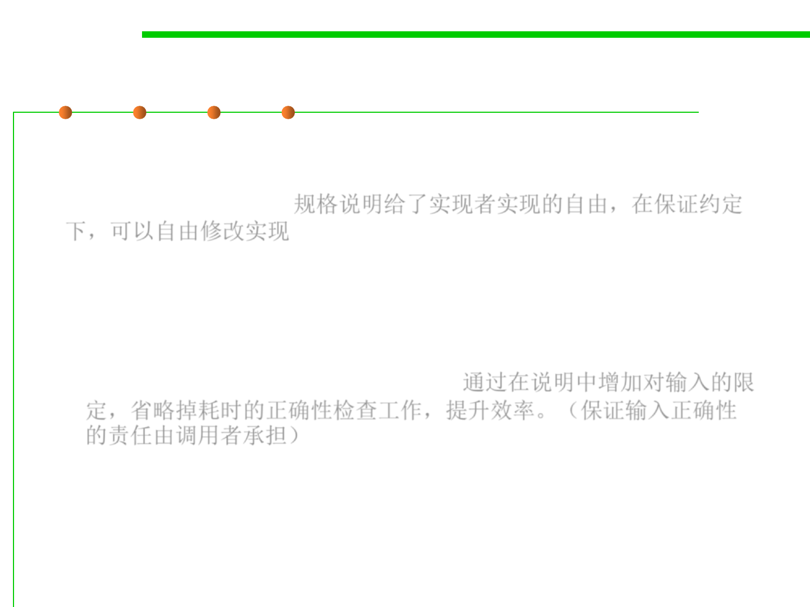

Specification (contract)
3.2 Designing Specification
▪ Specifications are good for the implementer of a method because
they give the implementer freedom to change the implementation
without telling clients. 规格说明给了实现者实现的自由，在保证约定
下，可以自由修改实现
▪ Specifications can make code faster, too.
– We’ll see that using a weaker specification can rule out certain states in
which a method might be called. This restriction on the inputs might allow
the implementer to skip an expensive check that is no longer necessary
and use a more efficient implementation. 通过在说明中增加对输入的限
定，省略掉耗时的正确性检查工作，提升效率。（保证输入正确性
的责任由调用者承担）